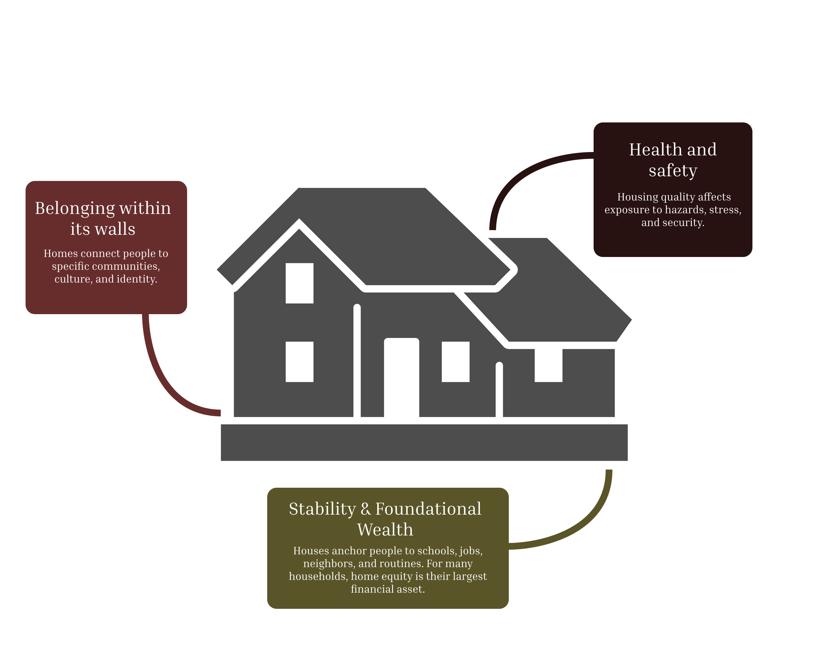
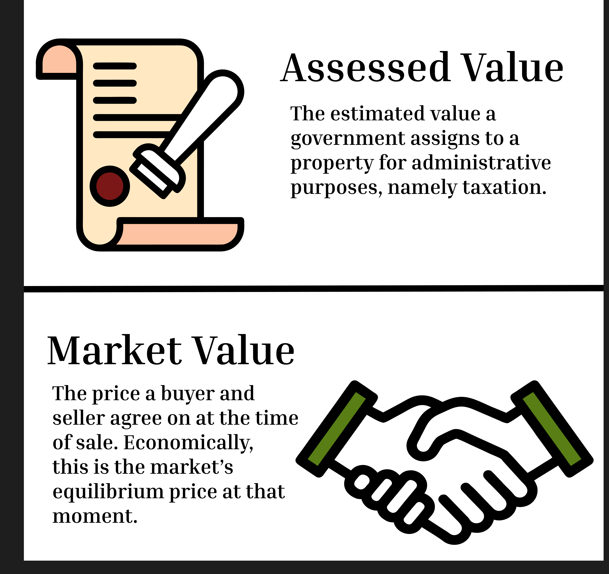
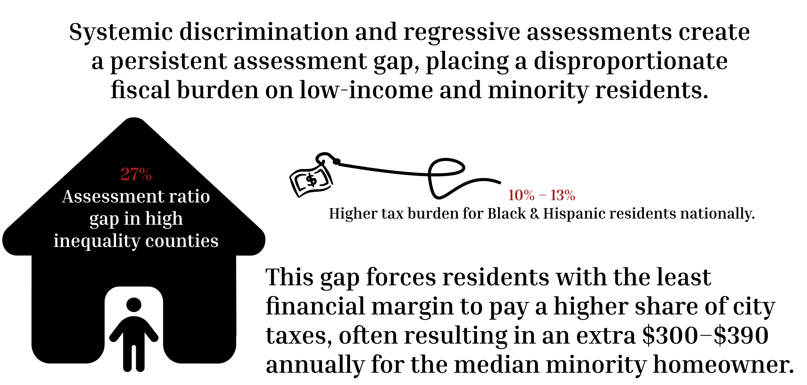

The Property Tax Assessment Gap
More than a structure. More than an address.
We call it 'home,' but how do we define what it is actually worth?
A home holds many kinds of value at once. It's safety. It's community. It's financial security.

In economic terms, however, it's how much you paid for it.
In practice, the value of a house is measured as a dollar price, and different agents take different measurements. Two of the most important are the market sale price — what a buyer actually paid — and the assessed value, which is what the city officially estimates the property to be worth.

Assessment standards like those from the International Association of Assessing Officers (IAAO) define what fair should look like:
Fair assessments matter because property taxes fund schools, services, and infrastructure. When assessments are biased or uneven, they distort who carries the cost of the city.

Did you know? Philly earned this nickname in the 19th century because its unique rowhouse culture allowed for one of the highest rates of homeownership in the US.
The lines you see drawn on this map demarcate Census Tracts: small, relatively permanent geographic subdivisions of a county, usually containing between 1,200 and 8,000 people. They are designed to be homogeneous with respect to population characteristics, economic status, and living conditions.
This makes tracts a useful lens for seeing local demographic factors like income:
Or racial majority:
In 2024, a Reinvestment Fund brief examined how changes to Philadelphia's property tax regime affected different communities. The findings raised concerns that assessment practices might be reinforcing existing inequalities. Using rich sales data from these tracts, let's dive into the issue.
Here we see that home values tend to cluster by race. We also see that the relationship between sale price and assessed value diverge in opposite directions by race.
Mouse over the graph to see the exact value of the gaps.
When Philadelphia assesses a property, it estimates what that property is worth — this is the assessed value. The assessment ratio compares that estimate to what the property actually sold for:
Perfectly accurate — assessed at exactly its market value.
Under-assessed: the city thinks it's worth less than buyers actually paid.
Over-assessed: the city thinks it's worth more than buyers paid.
This matters because property taxes are based on assessed value. Homeowners in over-assessed properties pay more in taxes relative to their home's actual market value — a hidden financial burden that, as the chart below shows, falls disproportionately on Black and Hispanic neighborhoods in Philadelphia.
In 2019 there was a citywide change in assessment methodology that sought to recalibrate property values, resulting in a notable convergence of assessment ratios across racial groups.
However, following the economic disruptions of COVID-19 and subsequent market shifts, the city changed the assessment methodology again in 2023 — and saw a dramatic surge in ratios, particularly in majority Black and Hispanic tracts, indicating that assessments are once again outpacing market values in these communities.
Placeholder for conclusion.